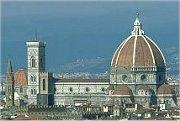
Nejvýznamnějším centrem italské renesance byla Florencie.
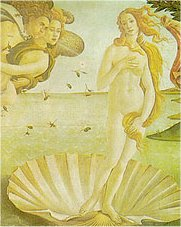
Botticelli: Zrození Venuše
|
RENESANČNÍ ITÁLIE
Renesance se zrodila v Itálii, kde působila celá řada významných výtvarných umělců. Giotto (1266-1337) začal používat perspektivu, Leonardo da Vinci (1452-1519) vymyslel techniku lazur a sfumato, zkoumal anatomii a proporce lidského těla, vymýšlel fantastické stroje (náčrtek „vrtulníku"), Michelangelo Buonarroti (1475-1564) byl vynikajícím malířem (Sixtinská kaple v Římě), sochařem (David, Mojžíš), stavitelem i básníkem. Nejvýznamnějšími architekty byli Brunelleschi (kaple Pazziů v klášteře Santa Croce ve Florencii), Palladio (vila Rotonda u Vicenzy) a Alberti, autor Deseti knih o stavitelství. V malířství se proslavil Raffael (Sixtinská madona), Botticelli (Zrození Venuše), Giorgione (Bouře), Tizian (Danaé přijímající zlatý déšť) a mnozí další. Významným sochařem byl Donatello (Sv. Jiří). Pro italské umění 15. stol. se někdy používá termín quattrocento [kvatročento] a pro 16. stol. cinquecento [činkvečento].
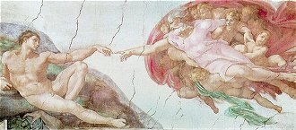
Michelangelo: Stvoření Adama, Sixtinská kaple
|
Historie
Itálie byla až do 19. stol. značně rozdrobená. Jih Apeninského poloostrova ovládalo neapolské a sicilské království, sever tvořila řada městských republik a vévodství, které vedly ustavičné spory a zmítaly jimi časté převraty. Své zájmy zde uplatňovali stoupenci císaře (ghibelliní) i papeže (guelfové), který stál v čele církevního státu. V italských válkách (1494-1559) porazilo Španělsko Francii a ovládlo tak velkou část Itálie.
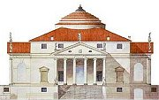
Palladiův projekt vily Rotonda, která stojí nedaleko Vicenzy.
|
Dante Alighieri (1265-1321)
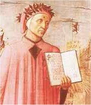
Dante je znám jako autor rozsáhlé veršované skladby Božská komedie, kromě ní ale napsal řadu dalších děl – milostné básně, autobiografii Nový život a pojednání O státě a O lidové řeči. Přestože byl Dante šťastně ženatý, ideál ženství představovala v jeho dílech jiná žena – Beatrice Portinariová, která předčasně zemřela. Za své protipapežské postoje byl odsouzen k vyhnanství. Pobýval v Paříži a italské Ravenně, kde je také pochován. Dantův životopis zpracoval Boccaccio, jeho nejslavnější báseň (Komedie) doplnil o přízvisko božská.
|
Dante Alighieri: Božská komedie
Dantova básnická skladba Božská komedie se skládá ze tří částí – Peklo, Očistec a Ráj. Z jejich názvů je zřejmé, že autor zůstává věrný křesťanským ideálům, ale v textu je už patrný jeho obdiv k antice. Středověký žánr alegorie zase doplňují antické prvky. To všechno dělá z Danta předchůdce renesančního umění. Celá skladba má 100 zpěvů.
Básník sestupuje se svým průvodcem Vergiliem do pekla, které je rozděleno na devět kruhů (nepokřtění, smyslní, obžerní, lakomci a marnotratníci, hněvivci, kacíři a nevěrníci, násilníci, podvodníci a zrádci) a kde se setkává s řadou mytologických postav, historických osobností, svých přátel i odpůrců. Na dně pekla sídlí Lucifer. Básník pokračuje do očistce, na jehož konci čeká Beatrice, aby ho provedla rájem (Vergilius byl pohan a do křesťanského ráje nesmí). Společně putují devíti sférami blažených až k sídlu Boha, kde básníka zasvětí sv. Bernard do tajemství Trojice a Kristova vtělení.
|
Italské výtvarné umění

Botticelliho ilustrace k Božské komedii – Dante a Beatrice
Jak si představuješ ráj, peklo a očistec? Zkus ho nakreslit nebo popsat.
Podívej se, jak si ráj a peklo představoval nizozemský malíř Hieronymus Bosch.
|
Francesco Petrarca
(1304-1374)
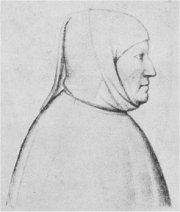
Petrarca byl jedním z prvních umělců, který dosáhl takového věhlasu, že byl pořízen jeho autentický portrét. Hodně cestoval a navštívil Paříž i Prahu. Ve svých dopisech se snažil přesvědčit císaře Karla IV., aby obnovil bývalou slávu Říma. Je autorem básnických sbírek Zpěvník a Triumfy.
|
Francesco Petrarca: Zpěvník
Zpěvník je sbírkou lyrických básní (většinou sonetů a kancón) věnovaných Petrarkově lásce Lauře. Mnoho o ní nevíme. Vlastně jen to, že zemřela během moru, který postihl Florencii v roce 1348.
Francesco Petrarca:
A on napodiv žije dál, odsouzen toliko k bolesti, stejně jako jeho loutna
Ty oči, k nimž se vroucně vracela,
má píseň: paže, ruce, nožka malá,
ta tvář, jež od davu mě dělívala,
až změnila mou mysl docela,
vlas, který linul zlato do čela,
ústa, v nichž úsměv archandělský sálá,
jímž pokaždé se země rájem stala...
To vše je už jen hrstka popela.
A jen já bídný trapně dále žiji,
na moři sám, bez milovaných hvězd,
loď bez kormidla, do níž vichry bijí.
O lásce sladké dozpíváno jest,
vyprahl pramen známých melodií.
A loutnu svou mám už jen pro bolest.
|
|
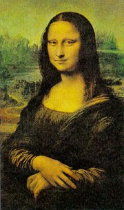
Leonardo da Vinci: Mona Lisa (La Gioconda)
Zjisti, co je sonet a co je kancóna.
Zkus složit sonet.
|
Giovanni Boccaccio
(1313 –1375)
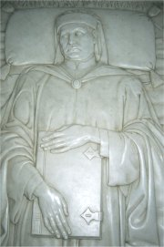
Giovanni Boccaccio [džovani bokačo] často pobýval ve Florencii a přátelil se s Petrarkou. Je autorem rámcové novely Dekameron, románu Smutek paní Plamínkové, Dantova životopisu a mnoha dalších děl.
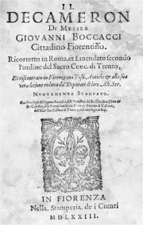
Dekameron
|
Giovanni Boccaccio: Dekameron
Rámcová novela Dekameron obsahuje 100 na sobě nezávislých příběhů, které si vypravují 3 muži a 7 žen po dobu deseti dní na venkovském sídle, kam uprchli z Florencie před řáděním moru. Každý den je jeden z nich zvolen králem, vybere téma příběhů a vybídne někoho k vyprávění.
Mor, o kterém se píše v Dekameronu, skutečně Florencii v roce 1348 postihl! Boccaccio ji naštěstí opustil a v Neapoli začal psát své nejslavnější dílo. Většina příběhů byla převzata z antických nebo středověkých knih a popisuje různé peripetie milenců, manželskou nevěru nebo falešnou morálku duchovenstva. Boccaccio špatné mravy nekritizuje. Je vždy na straně lásky, i když milenci porušují základní pravidla křesťanské morálky. Dokonce dává své knize přezdívku Arcikuplířka. Není divu, že ji církev zakázala a sám Boccaccio se jí před smrtí zřekl.
Dlouhou dobu dovolovala církev vydávání Dekameronu pouze ve značně zcenzurované podobě.
|
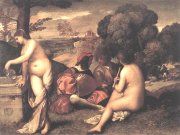
Giorgione: Venkovský koncert
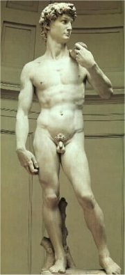
Michelangelo: David
Čemu se Boccaccio vysmívá v tomto příběhu?
Víš, jaký je rozdíl mezi povídkou, novelou a románem?
|
Niccolò Machiavelli
(1469-1527)
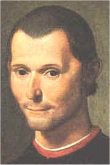
Kromě spisu Vladař je Machiavelli autorem rozverné renesanční komedie Mandragora, kterou církev nakonec zakázala, protože v ní vystupuje mnich jako kuplíř...
|
Niccolò Machiavelli: Vladař
Machiavelliho Vladař je praktický návod, jak si získat a udržet moc. Bez morálních skrupulí jsou v něm popsány různé způsoby ovládaní lidí. Autor razí myšlenku, že účel světí prostředky a důležité je dosažení vytčeného cíle za každou cenu. Jeho dílo tudíž popírá základní zásady křesťanské etiky.
Machiavelli věnoval svůj spis Lorenzovi II. Medicejskému a očekával, že se jím bude řídit při sjednocování Itálie. To se ovšem nestalo a Apeninský poloostrov zůstal až do 19. století rozdělený na drobné státečky.
Další díla
Tommaso Campanella: Sluneční stát
Ludovico Ariosto: Zuřivý Roland
Baldassarre Castiglione: Dvořan
|
Lorenzo Medici
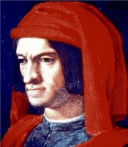
Lorenzo II. Medici (1492-1519) byl vnukem Lorenza I. Medicejského (1449-1492), vládce Florencie, který podporoval renesanční umělce a sám se věnoval psaní poezie.
Co si myslíš o Machiavellim a jeho Vladaři?
Vysvětli termín machiavelismus.
|
Internetové stránky
Italští renesanční autoři
Italská literatura
Machiavelli
Machiavelli: Vladař
Italian Art, reprodukce
Sixtinská kaple, fotografie
Palladio, stavby
Florencie, zajímavosti
Virtual Uffizi, florentská galerie
Uffizi, florentská galerie
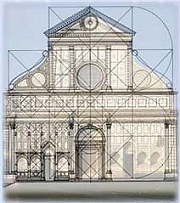
Albertiho nákres kostela Santa Maria Novella ve Florencii
|
Doporučená četba
Ariosto, Ludovico: Zuřivý Roland, přel. J.Pokorný, Praha 1970
Boccaccio, Giovanni: Dekameron, přel. R.Krátký, Odeon
Boccaccio, d’Arezzo: Nejstarší životopisy Dantovy, přel. O.E.Babler, Praha 1965
Buckhardt: Kultura renesanční doby v Itálii
Buonarroti, Michelangelo: Oheň, jímž hořím, Mladá fronta, Praha 1999
Campanella: Sluneční stát
Castiglione, Baldassarre: Dvořan, přel. A.Felix, Praha 1987
Dante Alighieri: Božská komedie, přel. O.F.Babler, Odeon, Praha 1989
Dante Alighieri: Božská komedie, Komentovaný výběr, přel. Vladimír Mikeš
Dante Alighieri: Nový život, Československý spisovatel, Praha 1969
Italská renesanční lyrika, SNKLHU, Praha 1954
Italské renesanční novely, Vyšehrad, Praha 2000
Macek, J.: Italská renesance, Praha 1965
Machiavelli, Niccolò: Vladař, přel. F.Pokorný, Praha 1969
Navštívení krásy, Italská renesanční lyrika, přel. J.Vladislav
Petrarca, Francesco: Listy velkým i malým tohoto světa, přel. A.Rausch, Odeon, Praha 1974
Petrarca, F.: Sto sonetů Lauře, přel. V.Renč
Petrarca, F.: Zpěvník, přel. J.Pokorný, Československý spisovatel, Praha 1979
Schulz, Karel: Kámen a bolest (román o Michelangelovi)
Slovník spisovatelů, Itálie
Stone, Irving: Agónie a extáze, Životopisný román o Michelangelovi, přel. D.Feltová, BB art, Praha 2001
Umění italské renesance, Slovart, Praha 2000
|
Připrav si referát o některé z uvedených knih nebo internetových stránek.
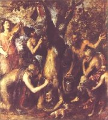
Tizian: Apollo trestá Marsya
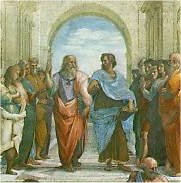
Raffael: Athénská škola
|
|